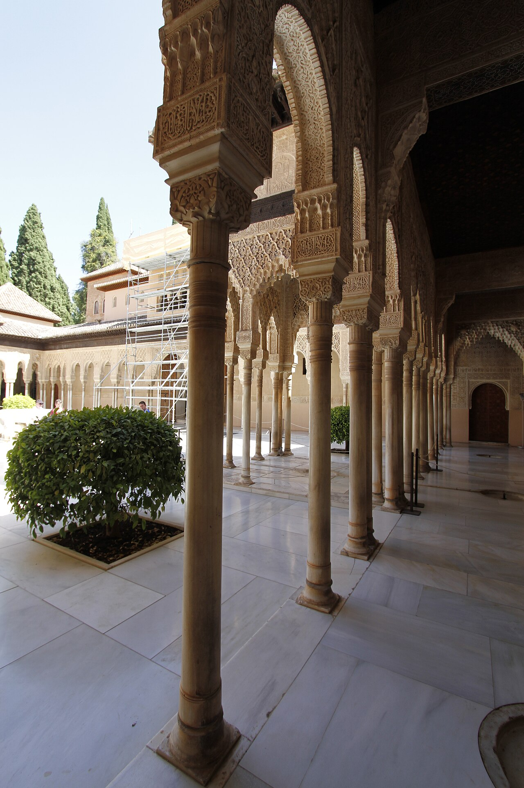
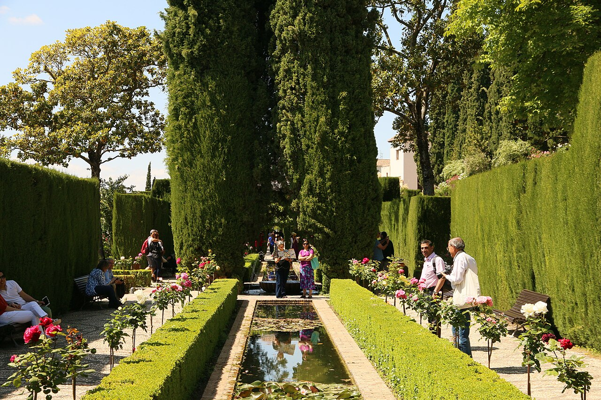

The Alhambra is not one room or one palace; it is a world above Granada, shaped by courtyards, towers, gardens, and changing light. Its Nasrid Palaces, Alcazaba, and Generalife each hold a different rhythm. The official visitor pages can help you see what will be open and included on the day you arrive.
A palace, a garden, a thousand small pauses
The Nasrid Palaces are known for intricate carved surfaces, courtyards, water, and doorways that frame one view after another. The Alcazaba turns your attention outward from its towers. In the Generalife, garden paths offer a softer pace; the Palace of Charles V adds a striking later chapter to the skyline.
A day here can feel fuller when it is not a checklist. Follow the sound of water through a courtyard, notice the geometry above a doorway, then let a view open in its own time. A little breathing room between the major spaces can become its own kind of souvenir.

Let the ticket set the day’s rhythm
The most important planning detail is the Nasrid Palaces entry time. The Alhambra’s official time-of-visit guidance says the date and access time are printed on the ticket, and entry to the palaces must take place during the stated time. Build the rest of your route around that slot and arrive with enough margin to reach the correct entrance.
Buy or confirm tickets through the official Alhambra ticket site. The monument’s opening-hours and prices page lists seasonal schedules and current ticket options. Recheck both pages before your visit; opening times and availability can change.
Walk gently through what time has left
Expect to walk outdoors between buildings and through gardens. Choose comfortable shoes, bring water, and check the forecast so you can prepare for sun or rain. If you are meeting a guide or travelling with someone, agree on a simple meeting point before the visit; the complex is large enough that a small delay can separate a group.
The monument is a protected historic place. Follow posted signs and staff instructions, keep clear of restricted areas, and avoid touching carved or decorated surfaces. The official visit guidance also sets photography rules, including restrictions on flash and camera supports, so check the latest conditions if you plan to bring equipment.

Official visitor information
Use the official pages for current schedules, ticket availability, and visitor conditions.
Recommended apps for the best trip
These independent services are not Met partners. Check official visitor details, exact locations, and current availability before booking.
-
Google Maps
Find your way around Granada and check walking distances to the monument.
-
Airbnb
Compare stays and neighborhoods, then check the route from the exact address.
-
Hostelworld
Compare hostel stays and shared-room options around Granada.
-
Renfe
Check official train schedules for longer journeys across Spain.
Met
save your name and the memory in the “Alhambra” Guest Book with a handwritten-style note or photo, and connect with other great travelers along the path.